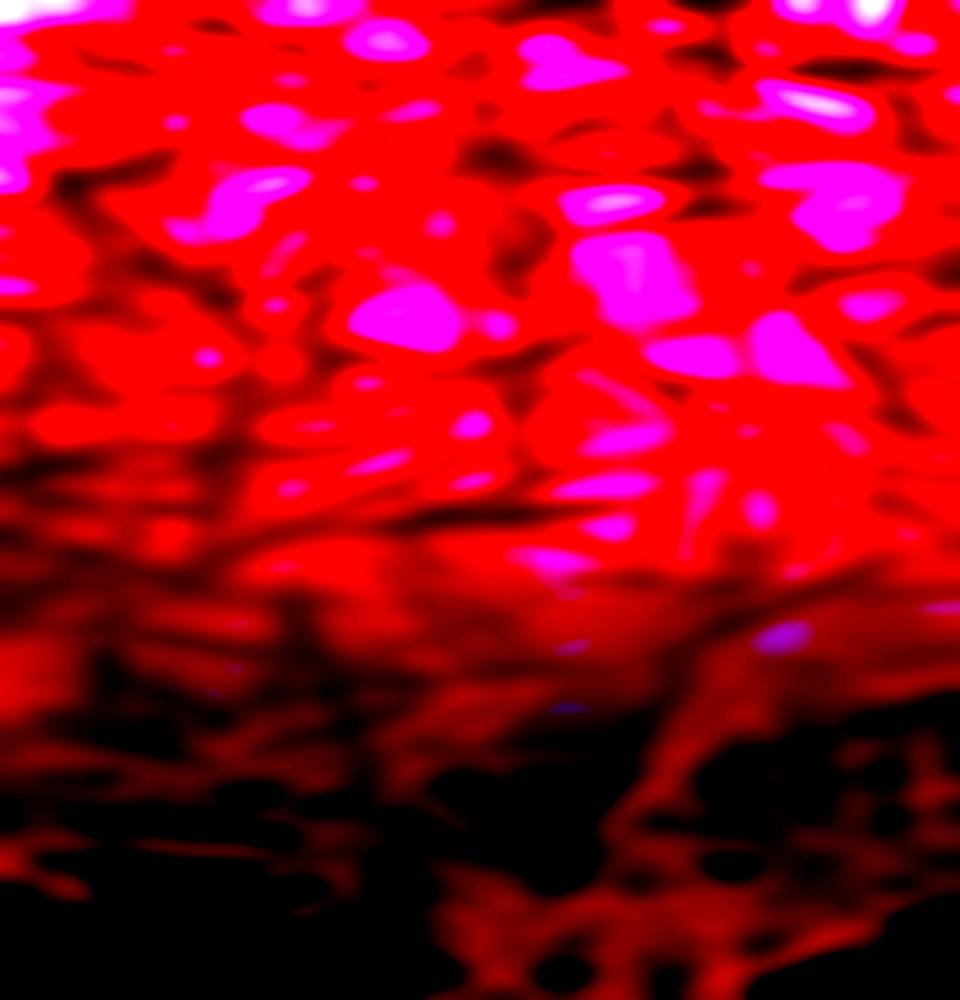
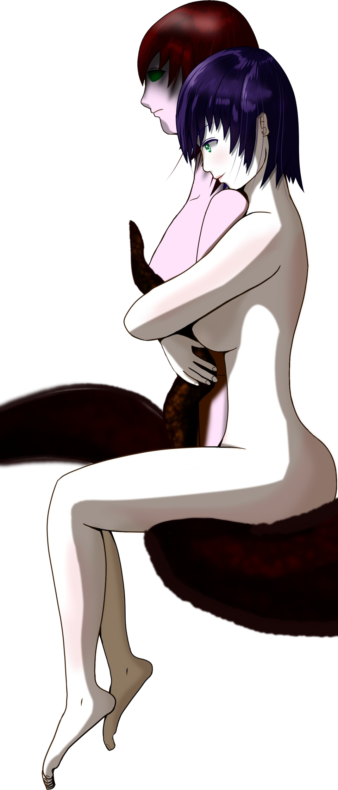
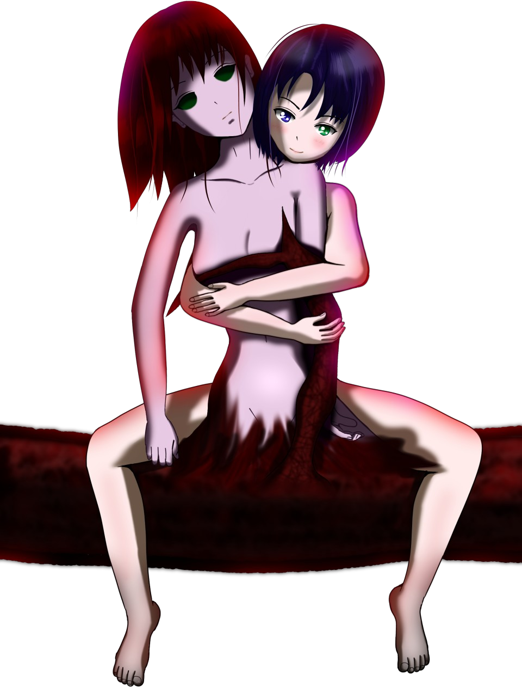
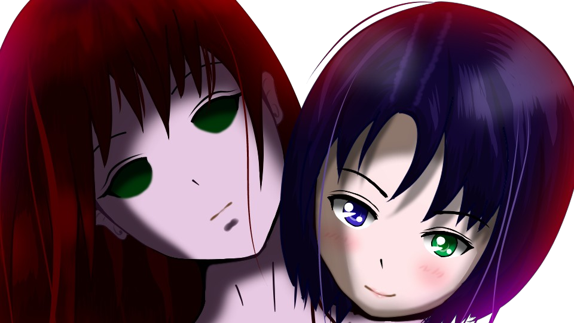

跳梁跋扈
「は……！」


ここは、車の中か。
お母さんが運転する車。
周りを見るに、まだ荒田の山道のようだ。
お母さんが運転する車。
周りを見るに、まだ荒田の山道のようだ。

「なあ、五島……」
「は、はい！」
「今って、何年何月何日だ？」
「え？ えっと……祀耀800年五月五日ですけど……」
「なつみは？」
「は、はい！」
「今って、何年何月何日だ？」
「え？ えっと……祀耀800年五月五日ですけど……」
「なつみは？」
「それは……えっと……」
「なつみは私が刺し殺した。そうだな？」
「あの…… そう……ですね……。 まだ古郡先輩は新村本家ですが……。 そのうち、警察が検死に――」
「なつみは私が刺し殺した。そうだな？」
「あの…… そう……ですね……。 まだ古郡先輩は新村本家ですが……。 そのうち、警察が検死に――」
思った通りだ。
私は意図した時間に戻ることができたようだ。
今、祀耀800年五月五日、早朝。
なつみを刺し殺して数時間ってところか。
私は意図した時間に戻ることができたようだ。
今、祀耀800年五月五日、早朝。
なつみを刺し殺して数時間ってところか。
「お母さん、車を停めてくれ」
「春花……」
「いいから、停めてくれよ。別に逃げたりしないから」
「…………」
「春花……」
「いいから、停めてくれよ。別に逃げたりしないから」
「…………」

「新村先輩、何をする気ですか……？」
「…………」
「…………」
「おい！ お父さん！ 聞いてんだろ！？ 出てこいよ！」
「新村先輩、何を……！」
「新村先輩、何を……！」
「ほら、死月妖花が永遠に生きられるようにしたいんだろ！？ 手伝うから出てこいよ！」
「しがつようか……？」
「しがつようか……？」

「ほう、春花、なぜか色々と知っているみたいだな」
「え、栄一郎さん……！？」
「嘘でしょ……！？」
「春花、事情は後で聞こう。何を手伝ってくれるんだ？」
「え、栄一郎さん……！？」
「嘘でしょ……！？」
「春花、事情は後で聞こう。何を手伝ってくれるんだ？」
「その前に聞かせてくれ。
これだけお父さんの目撃者がいるわけだけど、生かして帰すわけにはいかないよな？」
「はっはっは！ まあそうだね。 僕どころか女神様のことまで知られたわけだし、このまま帰すことはできないなあ」
「じゃあ、取引をしよう」
「ほう？ 一体何を？」
「はっはっは！ まあそうだね。 僕どころか女神様のことまで知られたわけだし、このまま帰すことはできないなあ」
「じゃあ、取引をしよう」
「ほう？ 一体何を？」
「なつみを生き返らせてくれ。
代わりに、生きた第一世代と第二世代をやるよ」
「ふうん、そういうことか。 まあいいよ。さあ、こうなった以上、急がないとまずい」
「ふうん、そういうことか。 まあいいよ。さあ、こうなった以上、急がないとまずい」
「よし。お父さん、ドローガは持ってるか？」
「ああ、春花がやるのか？」
「うん、刺すくらいは自分でやるさ」
「ほら、1つしかないからな」
「ああ、春花がやるのか？」
「うん、刺すくらいは自分でやるさ」
「ほら、1つしかないからな」

「せ、先輩……何をする気ですか……？」
「五島……お母さん……。 なつみも大事だけど、私は2人とも離れたくない。 だから……。 1つになろう。 永遠に」
「五島……お母さん……。 なつみも大事だけど、私は2人とも離れたくない。 だから……。 1つになろう。 永遠に」


「いた！
先輩、何ですかそれ……！」
「お父さん、頼む。今は五島の腕力に勝てないから」
「あいよ」
「う……！」
「なにこれ……！ これは……五島ちゃんの血……？」
「お父さん、頼む。今は五島の腕力に勝てないから」
「あいよ」
「う……！」
「なにこれ……！ これは……五島ちゃんの血……？」
「ぐ……！ せ、先輩……！ 私……！」
「どうする五島？ 今はドローガで痛みがないかもしれないけど、このままだと五島は出血多量で死ぬ。 でも私と1つになりたいと願えば、死なずに済む」
「い……いや……。死にたく……ない……」
「ほら、じゃあ願えよ。死にたくないから助けてほしいって」
「た……助けて……」
「どうする五島？ 今はドローガで痛みがないかもしれないけど、このままだと五島は出血多量で死ぬ。 でも私と1つになりたいと願えば、死なずに済む」
「い……いや……。死にたく……ない……」
「ほら、じゃあ願えよ。死にたくないから助けてほしいって」
「た……助けて……」

「よし、これで生きた第一世代は確保。
次は……」
「やめて……！ 春花！ 栄一郎さん！ 目を覚まして……！」
「お母さん、怖がらなくていいよ。お母さんが望めば、ずっと私たちと一緒だ」
「美冬ちゃん、僕は生き返ったんだよ。 あとは美冬ちゃんが僕たちと一緒にいたいと願えばその通りになる」
「や、やめて……！」
「やめて……！ 春花！ 栄一郎さん！ 目を覚まして……！」
「お母さん、怖がらなくていいよ。お母さんが望めば、ずっと私たちと一緒だ」
「美冬ちゃん、僕は生き返ったんだよ。 あとは美冬ちゃんが僕たちと一緒にいたいと願えばその通りになる」
「や、やめて……！」
「なあお母さん、このままだとお母さんは独りぼっち。
私もお父さんも失う。本当にそれでいいの？」
「美冬ちゃん、家族をこれ以上失いたいかい？」
「いや！ 春花！ 行かないで！」
「じゃあ願うといいよ。私たちと永遠に一緒ってさ……」
「春花……」
「美冬ちゃん、家族をこれ以上失いたいかい？」
「いや！ 春花！ 行かないで！」
「じゃあ願うといいよ。私たちと永遠に一緒ってさ……」
「春花……」
「私を守るために女ケ沢で子供を殺そうとしたのに、今さら迷わないよな？」
「さあ美冬ちゃん、ずっと僕たちと一緒にいよう。僕たちは、家族なんだから……」
「家族……。 ずっと、一緒……」
「さあ」
「さあ、美冬ちゃん」
「さあ美冬ちゃん、ずっと僕たちと一緒にいよう。僕たちは、家族なんだから……」
「家族……。 ずっと、一緒……」
「さあ」
「さあ、美冬ちゃん」


「春花ちゃん！？」
「おばさんと一緒に行ったんじゃ……！」
「城崎さん、チガ姉は？」
「茅萱ちゃんは……。 さっきまでいたんだけどな……」
「あーそうか。だよな、殺し合い起きるもんな。隠れたんだろ」
「おばさんと一緒に行ったんじゃ……！」
「城崎さん、チガ姉は？」
「茅萱ちゃんは……。 さっきまでいたんだけどな……」
「あーそうか。だよな、殺し合い起きるもんな。隠れたんだろ」

「なつみはもらっていくよ」
「春花ちゃん！ 何をする気！？」
「なつみを生き返らせてもらうんだよ」
「お、おい……！」
「春花ちゃん！ 何をする気！？」
「なつみを生き返らせてもらうんだよ」
「お、おい……！」
「さて、そろそろかな。
お父さんの話では、元木町ももう準備が整う頃だ」


「なあ、なつみ……」
「ん？」
「ごめんな、こんな形でしかなつみを生き返らせることができなくて……」
「でも、私は幸せ。春花と一緒だし、女神様と1つになれたから……」
「うん、私もだ」
「ん？」
「ごめんな、こんな形でしかなつみを生き返らせることができなくて……」
「でも、私は幸せ。春花と一緒だし、女神様と1つになれたから……」
「うん、私もだ」
「私たち、いつまでも親友だよね？」
「ああ、ずっとずっと一緒。 もう離れることもない。ずっと一緒さ……」
「春花……ありがとう、助けてくれて」
「私も一緒になれて、嬉しいよ。 ほら、見てみろよ、みんな一緒だぞ」
「ああ、ずっとずっと一緒。 もう離れることもない。ずっと一緒さ……」
「春花……ありがとう、助けてくれて」
「私も一緒になれて、嬉しいよ。 ほら、見てみろよ、みんな一緒だぞ」

「なつみ、嬉しいよな、ずっとみんなと一緒だなんて」
「あ が がが ああ 」
「はは、そうか、お前も嬉しいんだな。よかった」
「うう あ ぐがががが が」
「ああ、大丈夫、もう2度と離れないからさ」
「あ が がが ああ 」
「はは、そうか、お前も嬉しいんだな。よかった」
「うう あ ぐがががが が」
「ああ、大丈夫、もう2度と離れないからさ」

「なあ、なつみ……。
桜の花って、本当にきれいだよな」
「…………
いや……」
Read ✓ Next in this arc →